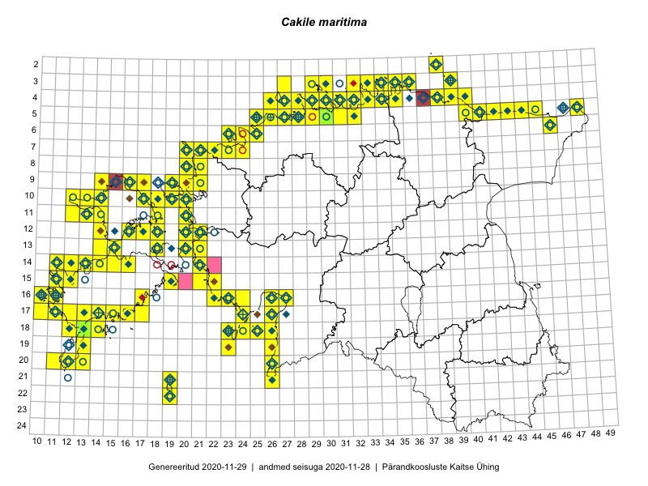

Cakile maritima
Uuendatud: 2016-12-01
Kaardile koondatud taksonid: Cakile maritima Scop.

Kaart põhineb 164 kirjel.
Kuvatud viited 20 esimesele andmebaasikirjele, ülejäänud PlutoFis
- Toomas Kukk, Peedu Saar: 2015-08-05: 20-11: ala
- Toomas Kukk, Eerik Leibak: 2015-08-10: 09-14: ala
- Toomas Kukk, Eerik Leibak: 2015-08-10: 13-14: ala
- Toomas Kukk, Eerik Leibak: 2015-08-10: 13-15: ala
- Tiit Hallikma, Toomas Kukk: 2015-07-21: 05-45: ala
- Rein Kalamees: 2015-09-03: 05-32: ala
- Ott Luuk: 2014-07-24: 12-20: ala
- Peedu Saar, Elle Roosaluste: 2015-07-12: 13-20: ala
- Toomas Kukk, Peedu Saar: 2014-07-03: 14-21: ala
- Toomas Kukk, Eerik Leibak: 2015-08-11: 09-16: ala
- Peedu Saar: 2015-08-07: 16-10: ala
- Toomas Kukk: 2014-06-21: 16-10: ala
- Toomas Kukk: 2014-06-18: 18-14: ala
- Rein Kalamees, Kersti Püssa: 2015-09-01: 04-30: ala
- Rein Kalamees, Kersti Püssa: 2015-08-25: 03-35: ala
- Rein Kalamees, Kersti Püssa: 2015-09-12: 04-33: ala
- Meeli Mesipuu, Kadri Tali: 2015-07-06: 16-17: ala
- Thea Kull, Eerik Leibak: 2015-07-22: 05-42: ala
- Ott Luuk, Elle Roosaluste: 2015-05-29: 18-23: ala
- Indrek Tammekänd, Vilma Kuusk: 2015-08-30: 16-22: ala